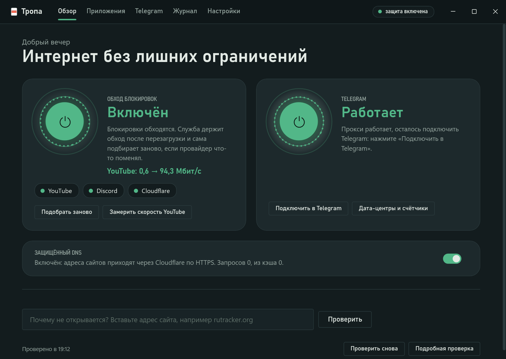

Тропа сама разбирается, как провайдер режет YouTube, Discord и Telegram, подбирает стратегию zapret и держит её — после перезагрузки, при смене сети, когда провайдер что-то поменял.
Tropa figures out how your ISP blocks YouTube, Discord and Telegram, picks a zapret strategy and keeps it working — across reboots, network changes and whatever the ISP changes next.
Windows 10 и 11 · бесплатно и с открытым кодом (MIT) · есть переносная версия без установки
Windows 10 and 11 · free and open source (MIT) · portable version available · interface in Russian

Всё включается из окна. Никаких bat-файлов, ручных стратегий и запуска от администратора.
Everything is a toggle in the window. No .bat files, no hand-picked strategies, no "run as administrator".
Видео без тормозов, Discord с голосом. Голос проверяется UDP-пакетом на настоящие голосовые серверы.
Smooth video, Discord with voice. Voice is checked with a real UDP packet to Discord's voice servers.
Встроенный прокси через WebSocket веб-версии и Cloudflare. Тропа сама добавляет его в Telegram и проверяет каждый дата-центр.
Built-in proxy over Telegram Web's WebSocket and Cloudflare. Tropa adds it to Telegram and checks every datacenter.
DNS-over-HTTPS для всей системы. Если DoH ляжет, Тропа вернёт прежний DNS — интернет не встанет.
System-wide DNS-over-HTTPS. If DoH goes down, Tropa restores your old DNS so the internet keeps working.
Выберите запущенную программу — Тропа полминуты слушает, куда она ходит, и сама соберёт домены и порты.
Pick a running program — Tropa listens for half a minute and collects its domains and ports itself.
Дома одна стратегия, на телефонном интернете другая. Тропа узнаёт сеть и переключается сама.
Home Wi-Fi and phone hotspot get different strategies. Tropa recognizes the network and switches.
По желанию Тропы делятся тем, что помогло у их провайдера, — у следующих подбор займёт секунды.
Opt in and Tropa installs share what worked on their ISP, so tuning takes seconds for the next user.
Ничего без вашего ведома. Ни IP, ни адресов сайтов, ни идентификаторов.
Nothing behind your back. No IPs, no site addresses, no identifiers.
| Куда | Where | Зачем | Why |
|---|---|---|---|
| github.com | скачать zapret, проверить обновленияdownload zapret, check for updates | ||
| youtube.com, discord.com… | проверить, что режут, — как браузерsee what is blocked — like a browser | ||
| 1.1.1.1, 8.8.8.8, 9.9.9.9 | защищённый DNS, если включёнsecure DNS, when enabled | ||
| общая база стратегий | shared strategy base | подсказки; итоги подбора — только если вы включили «Делиться»hints; tuning results only if you turn on "share" |
Нет. Трафик идёт напрямую, как обычно; Тропа лишь меняет, как выглядят первые пакеты соединения, чтобы DPI провайдера их не узнал. Поэтому скорость не падает, а сайты видят ваш обычный адрес.
No. Traffic goes directly as usual; Tropa only changes how the first packets of a connection look so the ISP's DPI doesn't recognize them. Speed stays the same, and sites see your usual address.
zapret ставит сетевой драйвер WinDivert — это нормально для такой программы, но некоторые антивирусы помечают его. Тропа качает zapret только из официальных релизов bol-van и сверяет SHA-256.
zapret installs the WinDivert network driver — normal for this kind of tool, but some antiviruses flag it. Tropa downloads zapret only from official bol-van releases and verifies SHA-256.
Тропа честно скажет «заблокирован по адресу»: настройка DPI тут не поможет, нужен VPN или прокси. Для Telegram прокси уже встроен.
Tropa will tell you "blocked by address": DPI tricks can't help, you need a VPN or proxy. For Telegram the proxy is built in.
Как любую программу — через «Приложения и возможности». Служба остановится, DNS вернётся прежний.
Like any app — via Apps & Features. The service stops and your DNS is restored.